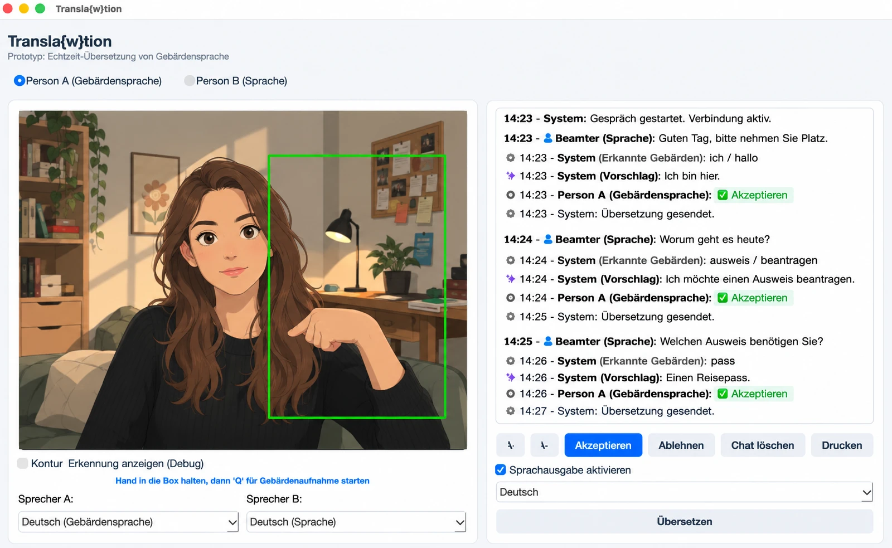

Transla{w}tion
Echtzeit-Übersetzung von Gebärdensprache für Behördengänge

Echtzeit-Übersetzung von Gebärdensprache für Behördengänge
Transla{w}tion ist ein Prototyp für eine Software, die Menschen mit Gebärdensprache bei Behördengängen unterstützen soll. Ziel der Idee ist es, die Kommunikation zwischen gebärdensprachlichen und lautsprachlichen Personen direkt über einen Laptop zu ermöglichen und dadurch in geeigneten Situationen die Abhängigkeit von einem zusätzlichen Dolmetscher zu reduzieren.
Die App soll dabei eine Alternative zur ausschließlich textbasierten Kommunikation für Gebärdensprachler darstellen. Sie sollen nicht nur über E-Mail oder mit Unterstützung eines Dolmetschers kommunizieren können, sondern auch selbstständig und direkt ein Gespräch mit ihrem Gegenüber führen können.
Hinweis: Transla{w}tion ist ein Hackathon-Prototyp und kein fertiges oder für den produktiven Einsatz freigegebenes Übersetzungssystem.
Entstehung
Die App ist im Rahmen des Bucerius Law School Hackathon 2025 im Mai 2025 entstanden.
Der Prototyp wurde entwickelt, um eine mögliche technische Lösung für barriereärmere Kommunikation im Kontext von Behörden zu zeigen. Dabei stand insbesondere die Idee im Vordergrund, Gebärdensprachkommunikation und normale Sprache in einem gemeinsamen Gesprächsfenster zusammenzuführen.
Versionen und Systemvoraussetzungen
Im Repository befinden sich zwei Windows-Varianten:
- Windows mit MediaPipe: Version mit MediaPipe zur Unterstützung der Gebärdenerkennung. Diese Variante funktioniert nur mit Python 3.11 (Stand: 09.08.2026).
- Windows und macOS ohne MediaPipe: Eine Variante ohne MediaPipe, die sowohl unter Windows als auch macOS verwendet werden kann.
Die MediaPipe-Version ist damit insbesondere hinsichtlich der Python-Version eingeschränkt. Die Angaben entsprechen dem Stand des Projekts vom 09.08.2026.
Funktionsweise
Das grundlegende Konzept besteht aus zwei Kommunikationswegen:
- Gebärdensprache → Text: Eine Kamera erfasst die gebärdende Person. Einzelne erkannte Gebärden werden fortlaufend als Wörter angezeigt.
- KI-Vorschlag: Aus den fortlaufend erkannten Wörtern wird im Hintergrund ein sinnvoller deutscher Satz vorgeschlagen.
- Bestätigung durch die gebärdende Person: Der vorgeschlagene Satz kann angenommen oder abgelehnt werden. So soll die gebärdende Person kontrollieren können, ob die Software ihre Aussage richtig verstanden und formuliert hat.
- Normale Sprache → Gespräch: Eine lautsprachlich kommunizierende Person kann im selben Chat antworten. Dadurch soll ein gemeinsames Gespräch zwischen gebärdensprachlichen und lautsprachlichen Personen möglich werden.
- Sprachausgabe: Übersetzte bzw. bestätigte Inhalte können zusätzlich über eine Sprachausgabe ausgegeben werden.
Vereinfacht lässt sich der Ablauf so darstellen:
flowchart TD
A[Gebärde] --> B[Kamera / Erkennung]
B --> C[fortlaufend erkannte Wörter]
C --> D[KI formuliert Satzvorschlag]
D --> E{Person bestätigt?}
E -->|Ja| F[gemeinsamer Chat]
E -->|Nein| C
F <--> G[lautsprachliche Antwort]
classDef step fill:#f6f6f5,stroke:#111,stroke-width:1px,color:#111,rx:8,ry:8
classDef decision fill:#D9FF66,stroke:#111,stroke-width:1.5px,color:#111
classDef chat fill:#111,stroke:#111,color:#fff
class A,B,C,D step
class E decision
class F,G chat
Die Oberfläche ist dabei bewusst als einfache Desktop-Anwendung konzipiert. Sie soll grundsätzlich auf einem gewöhnlichen Laptop mit Kamera eingesetzt werden können.
Beispiel für einen Gesprächsablauf
Ein möglicher Behördengang könnte beispielsweise so aussehen:
10:15 – Person B (Sprache): Guten Tag, wie kann ich Ihnen helfen?
10:15 – System (Erkannt): ich | möchte | einen | ausweis | beantragen
10:15 – System (Vorschlag): Ich möchte einen Ausweis beantragen.
10:15 – Person A (Gebärdensprache): ✓ Übernehmen
10:15 – System: Übersetzung gesendet.
10:16 – Person B (Sprache): Gerne. Benötigen Sie einen Personalausweis oder einen Reisepass?
10:16 – System (Erkannt): personalausweis
10:16 – System (Vorschlag): Ich möchte einen Personalausweis beantragen.
10:16 – Person A (Gebärdensprache): ✓ Übernehmen
10:16 – System: Übersetzung gesendet.
10:17 – Person B (Sprache): Dafür benötige ich bitte Ihren bisherigen Ausweis
und gegebenenfalls ein aktuelles biometrisches Passfoto.
Der entscheidende Punkt ist dabei, dass die erkannte Wortfolge nicht automatisch als endgültige Aussage versendet werden muss. Erst der Satzvorschlag der KI kann von der gebärdenden Person bestätigt oder abgelehnt werden.
Status des Projekts
Die App wurde als Hackathon-Prototyp entwickelt und nicht weiterentwickelt.
Eine Weiterentwicklung ist aktuell ebenfalls nicht geplant. Es bestehen derzeit keine Pläne, das Projekt zu einem produktiven oder dauerhaft gepflegten System auszubauen.
Der hier veröffentlichte Stand dient daher in erster Linie als Dokumentation und als Einblick in die im Hackathon entwickelte Idee und den entstandenen Prototyp.
Wichtige Einschränkungen
Der Prototyp ist nicht als verlässliches Übersetzungs- oder Kommunikationssystem für reale Behördengänge gedacht. Insbesondere können automatische Gebärdenspracherkennung und KI-basierte Sprachformulierung Fehler machen.
Bei einer tatsächlichen Anwendung in rechtlich oder administrativ relevanten Situationen müssten unter anderem Genauigkeit, Datenschutz, Barrierefreiheit, Sicherheit, Einwilligung, Haftungsfragen und die zuverlässige Kommunikation mitgedacht und umfangreich geprüft werden.
Die im Prototyp dargestellte Idee ist daher als technisches Konzept und nicht als Ersatz für professionelle Gebärdensprachdolmetschung oder andere notwendige Kommunikationshilfen zu verstehen.
Kontakt
Bei Interesse am Projekt, dem Prototyp oder der dahinterstehenden Idee kann Kontakt aufgenommen werden:
Entstanden beim Bucerius Law School Hackathon 2025 · Mai 2025
Technische Beschreibung
Übersicht
Transla{w}tion ist eine Python-basierte Desktop-Anwendung, die Echtzeit-Gebärdensprachenerkennung mit Spracherkennung und KI-gestützter Satzgenerierung kombiniert, um die Kommunikation zwischen gebärdensprachlichen und lautsprachlichen Personen zu erleichtern. Die Anwendung nutzt MediaPipe für die Erkennung von Hand-, Gesichts- und Körperhaltungen sowie Ollama für die KI-basierte Verarbeitung der erkannten Wörter zu sinnvollen Sätzen.
Architektur
Die Anwendung folgt einem modularen Aufbau mit den folgenden Hauptkomponenten:
- Benutzeroberfläche (GUI) – PyQt5, Kamera-Fenster, Chat-Fenster, Steuerelemente.
- Gebärdensprachenerkennung – MediaPipe hands, face_mesh, pose, VideoThread.
- Spracherkennung – speech_recognition + Google API, sounddevice, AudioRecorder Thread.
- KI-Satzgenerierung – Ollama gemma3:1b, kontextsensitiv.
- Übersetzung und Sprachausgabe – deep_translator, gTTS, externe Google-Server.
- Druckfunktion – QPrinter, QPrintPreviewDialog A4.
Verwendete Bibliotheken und Abhängigkeiten
| Bibliothek | Version | Zweck |
|---|---|---|
| PyQt5 | 5.x | GUI-Framework |
| OpenCV (cv2) | 4.x | Kameraaufnahme |
| MediaPipe | 0.10.x | Landmarken |
| NumPy | 1.x | Mathematik |
| sounddevice | 0.4.x | Audioaufnahme |
| soundfile | 0.12.x | WAV |
| speech_recognition | 3.10.x | Audio → Text |
| deep_translator | 1.11.x | Übersetzung |
| gTTS | 2.3.x | TTS |
| Ollama | 0.1.x | lokales LLM |
Ablauf der Gebärdensprachenerkennung
- Kameraaufnahme: cv2.VideoCapture(0) → RGB → MediaPipe.
- Landmark-Erkennung: THUMB_TIP, INDEX_FINGER_TIP etc.
- Gebärdenzuordnung: DE "Ich", "Tat", "nicht", "begangen", ASL "I", "did", "not", "commit", Sammlung in recognized_words.
- KI-Satzgenerierung: Ollama Vorschlag → Bestätigung.
- Chat-Integration: Person A + Person B.
Ablauf der Spracherkennung (Person B)
- Audioaufnahme: Taste "Q", 5s, 44.1 kHz.
- Spracherkennung: Google API, de-DE / en-US.
- Anzeige im Chat: Person B.
Threading-Modell
| Thread | Zweck | Signale |
|---|---|---|
| VideoThread | Kamera + Gebärden | change_pixmap_signal, recording_finished_signal |
| AudioRecorder | Audio + STT | recording_finished_signal, processing_started_signal |
Datenfluss
graph TD
A[Kamera] -->|Video-Frames| B[VideoThread]
B -->|Landmarken| C[Gebärden-Erkennung]
C -->|Erkannte Wörter| D[Ollama KI]
D -->|Satzvorschlag| E[Chat]
E -->|Bestätigung| F[Sprachausgabe / Übersetzung]
G[Mikrofon] -->|Audio| H[AudioRecorder]
H -->|Text| E
E -->|Text| I[GoogleTranslator]
I -->|Übersetzung| E
E -->|Text| J[gTTS]
J -->|MP3| K[QMediaPlayer]
classDef cam fill:#111,stroke:#111,color:#fff,rx:8
classDef proc fill:#f6f6f5,stroke:#111,color:#111,rx:8
classDef ai fill:#D9FF66,stroke:#111,stroke-width:1.5px,color:#111,rx:8
classDef chat fill:#fff,stroke:#111,color:#111,rx:8
class A,G cam
class B,C,H,I,J proc
class D ai
class E,F,K chat